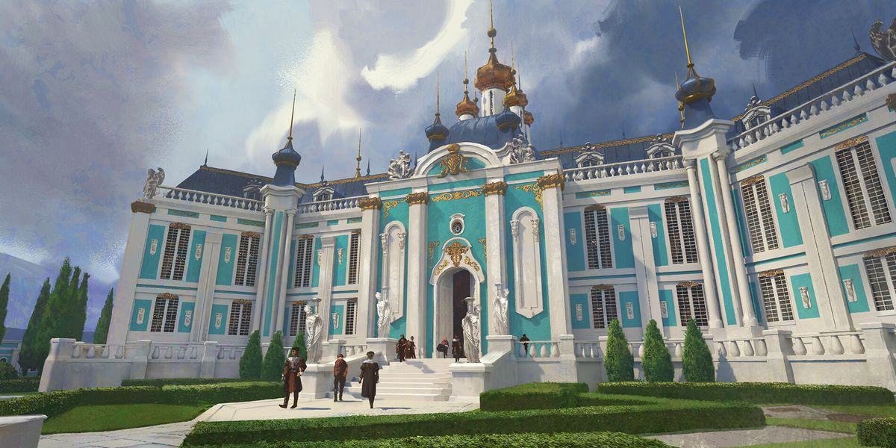

Crastino Academy, School of the Future
When you read the words Crastino Academy, what words come to mind? I'm sure unless you speak Latin, it means nothing to you. Now what if I told you, it could mean "Tomorrow Academy," what then would you think?
Crastino Academy means much to me. It is a place that focuses on acquiring knowledge and skills for the future, embracing innovation and diversity, and preparing its students for the challenges ahead. It is a place that carries a mysterious and alluring quality. It sparks curiosity and captures the imagination, with many secrets waiting to be discovered by its students. It is a place that evokes magical or supernatural elements within the academy. Above all else, it is a prestigious institution dedicated to higher education and specialized training. Crastino Academy means much to me and I hope it will mean much to you too.
Founded in the Null Age, Crastino Academy is an academic institution that nurtures the future of our world, whether they be heroes or villains. Their mission is to help each student master their extraordinary abilities, skills, and talents through world-class academics and unique extracurriculars. Crastino is a safe haven for its students to learn and grow no matter who they are.
Join us today as we continue to write the future of our world, together.
